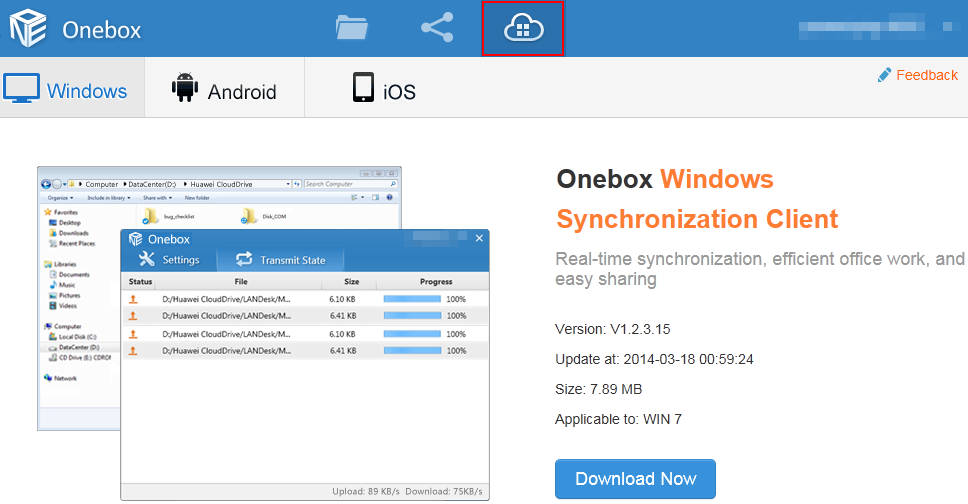

To use StorBox to the fullest of its abilities, you are advised to install synchronization
client on all your computers. After being started for the first time, StorBox creates a synchronization folder named StorBox in the computer by default. You can change the
name and location of the synchronization folder. After files are placed
in the synchronization folder, StorBox automatically uploads the files to the cloud so that you can access
the files on any of your computers and mobile terminals.
